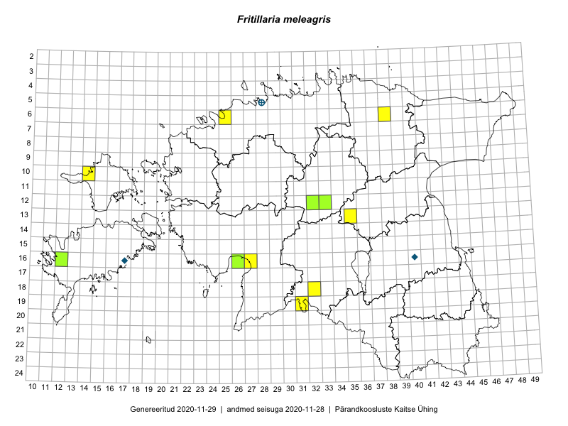

Fritillaria meleagris
Uuendatud: 2016-12-08
Kaardile koondatud taksonid: Fritillaria meleagris L.

Kaart põhineb 9 kirjel, neist vaatlusi 8 ja eksemplare 1. Taksonit on leitud 8 ruudust.
| Ruut | Vaatleja(d) | Vaatlusaeg | Kirje tüüp | Viide andmebaasikirjele |
|---|---|---|---|---|
| 12-32 | Peedu Saar, Timo Luhamäe | 2015-05-10 | punkt | vaata PlutoFis |
| 12-33 | Toomas Kukk, Indrek Tammekänd | 2015-05-10 | punkt | vaata PlutoFis |
| 06-38 | Toomas Kukk, Raivo Kalle | 2015-05-13 | punkt | vaata PlutoFis |
| 06-25 | Jana-Maria Habicht | 2015-04-25 | punkt | vaata PlutoFis |
| 16-12 | Mari Reitalu, Toomas Kukk | 2014-06-20 | punkt | vaata PlutoFis |
| 19-31 | Ott Luuk, Indrek Tammekänd | 2015-05-22 | punkt | vaata PlutoFis |
| 13-35 | Ott Luuk, Liina Oja | 2015-05-11 | punkt | vaata PlutoFis |
| 10-14 | Toomas Kukk, Peedu Saar | 2016-05-07 | punkt | vaata PlutoFis |
| 12-32 | Peedu Saar, Timo Luhamäe | 2015-05-10 | eksemplar | vaata PlutoFis |